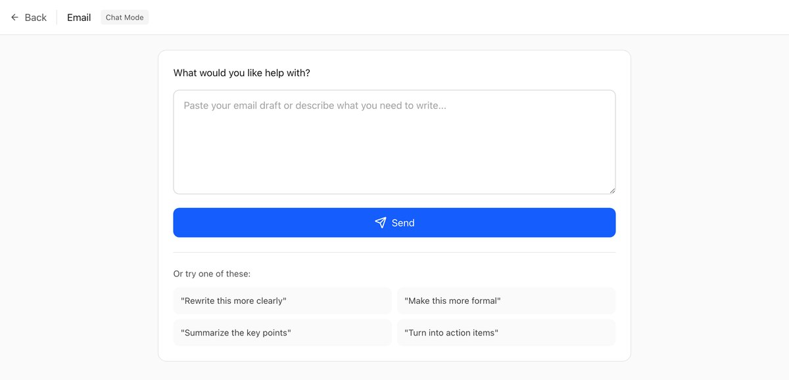
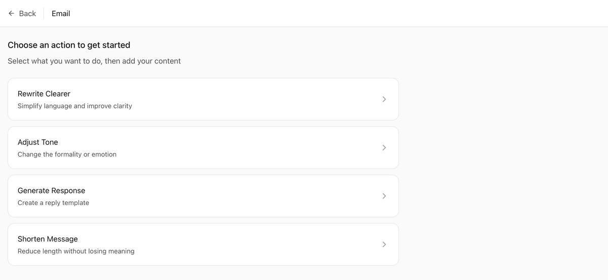
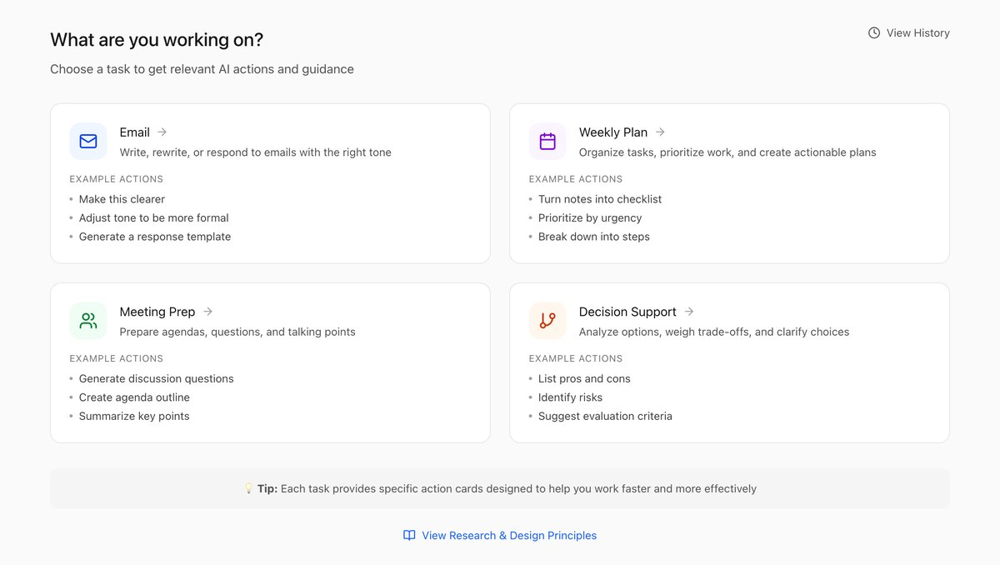
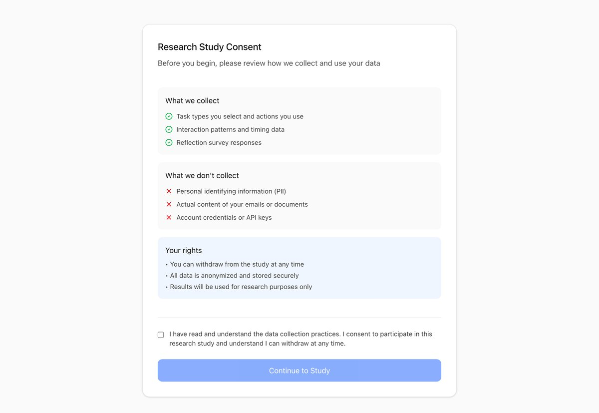
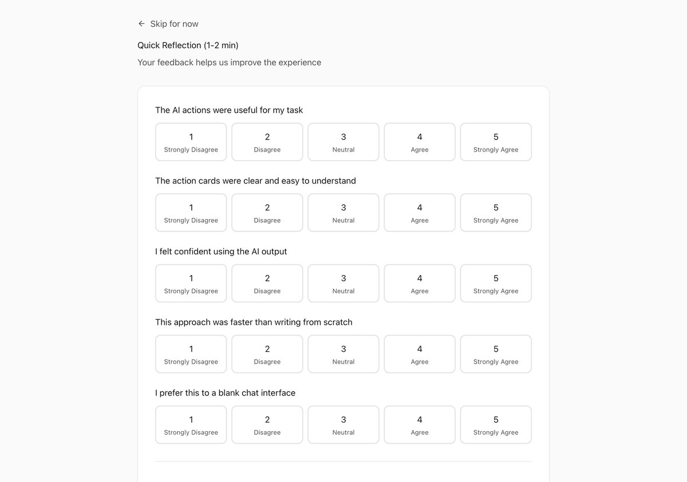
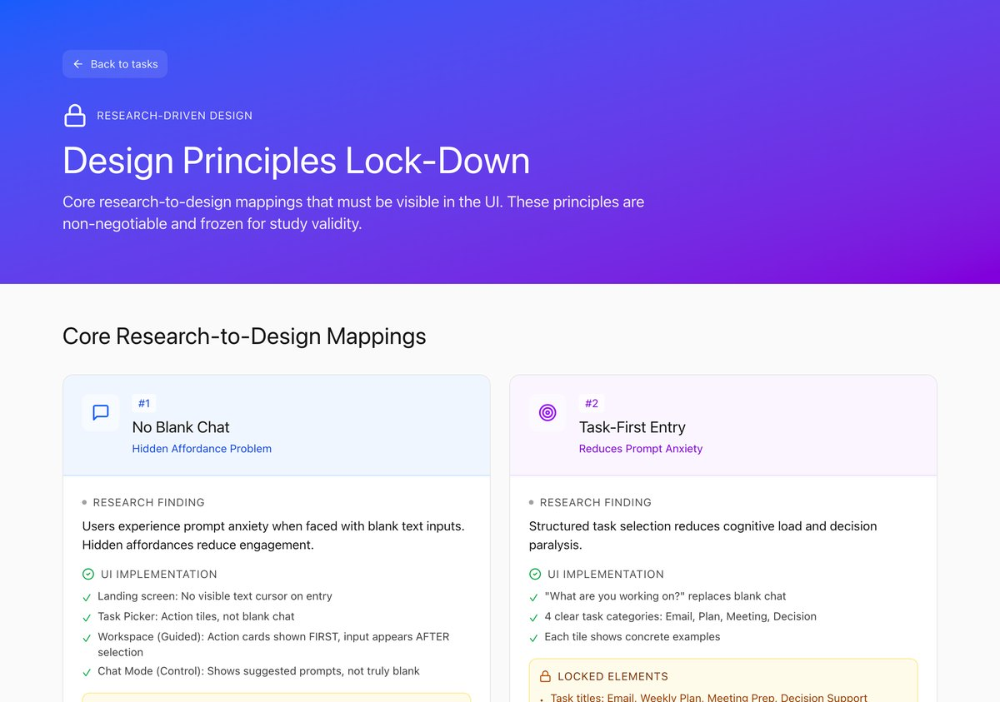

I want to start with the thing I keep noticing, because this whole piece is really just that one observation stretched out until it turns into an argument.
Every few weeks there is a new model. Better benchmarks, longer context, new modality, faster, cheaper. And every few weeks I watch someone I know open it up and use it like a slightly chattier Google. They paste a question in. They get a paragraph back. They close the tab. That is the whole interaction.
Meanwhile the model they just closed could have read their spreadsheet, rewritten their cover letter in their own voice, walked them through the thing they were scared to ask about, or looked at a photo of the error on their screen. They did not know. Nobody told them. And by the time anyone might have told them, there is a new one.
That is the gap I care about. Not the gap between what models score and what they should score. The gap between what a model can do and what any given person actually knows how to get out of it.
The gap is not capability. It is fluency.
Here is the shape of it. Capability is going up fast and roughly continuously. Fluency, by which I mean the average person's working knowledge of what to ask for, goes up slowly, in steps, and mostly by accident. Somebody shows you a thing at work. You see a video. You stumble into it. That is basically the whole distribution channel.
So the two lines separate. And the interesting part is that the gap does not just grow, it compounds, because each new release resets a little bit of what you thought you knew. The thing that did not work six months ago works now. You already filed it under "cannot do that" and you are not going back to check.
None of this is new, which is the part I found reassuring. Economists have been describing this exact shape for forty years, just about a different technology each time. Robert Solow said in 1987 that you could see the computer age everywhere except in the productivity statistics. Paul David's answer to that, in a paper about electric dynamos, is the one that stuck with me: factories had electricity for decades before they got the productivity out of it, because the gain did not come from swapping the steam engine for a motor. It came from rearranging the entire factory floor around what motors made possible, and that took a generation of people who thought in motors rather than in belts and shafts.
So the lag is not stupidity. The lag is that the complementary knowledge takes time to build, and right now the technology is moving faster than the knowledge can settle. Brynjolfsson, Rock and Syverson call the same idea a productivity J-curve: things look flat or worse before they look better, because everyone is busy building the invisible scaffolding first.
I find this genuinely comforting, honestly. It means the current moment is not a failure of the technology and it is not a failure of people being lazy. It is just what the middle of an adoption curve feels like from the inside. The uncomfortable part is that we usually only recognise the middle in hindsight.
The calculator problem
The analogy I keep coming back to is a phone.
You are holding a device that can do a genuinely absurd number of things. It can measure the height of a wall, identify a plant, translate a menu in real time through the camera, isolate a voice out of a noisy recording, and tell you which of your screenshots has the wifi password in it. And most days you use it as a calculator, a messenger, and a rectangle to look at.
The capability is sitting right there. You are just not aware that the question is askable.
That last bit is the important framing for me, and it is where the HCI literature actually has language for this. Don Norman calls it the gulf of execution: the distance between what you want and what you can figure out how to express to the system. When there is nothing on screen suggesting an action exists, the gulf is not hard to cross, it is invisible. You do not know you are standing at the edge of anything.
And there is an older, meaner finding underneath it. Carroll and Rosson wrote about the paradox of the active user back in 1987: people will not stop to learn a system, even when stopping to learn it would obviously save them time. They are trying to get the actual task done. Reading the manual is not the task. So they stay on the small set of moves they already know, forever, and the rest of the software might as well not exist.
Which describes basically every AI product I have used. There is a text box. The text box is infinite. Nothing about it tells you what is on the other side. So people do the thing they already know how to do, which is type a question like it is a search engine, and then conclude that is what the thing is.
The blank box is a cold start problem
I want to be specific about why the blank box is bad, because "add suggestions" sounds like a small UI nitpick and I think it is actually the whole thing.
A blank input is a request for the user to already know two things at once: what the system is capable of, and how to phrase it in a way that gets that capability out. Those are separate skills and most people have neither. There is a CHI paper from 2023 by Zamfirescu-Pereira and colleagues with the very honest title "Why Johnny Can't Prompt", where they watched non-experts try to design prompts. People did not systematically explore. They over-generalised from single successes and single failures. They mapped their conversational instincts onto the model and were surprised when the model did not behave like a person who understood context.
That matches what I see constantly. Someone tries a thing once, it comes out badly, and the conclusion is not "my prompt was underspecified", it is "it cannot do that". One sample. Filed permanently. And a blank box gives you no way to recover from a wrong conclusion, because it never volunteers anything.
I catch myself doing this too, which is the annoying part. I have a set of maybe eight things I ask for, and I mostly rotate through them. Every so often I try something outside the set and it works and I think, how long has that been available. Usually the answer is months.
The part I did not expect: knowing more can make you worse
This is the section I actually got interested in, and it is where the research took a turn I was not planning on.
My starting intuition was that expertise straightforwardly helps. You know more, you ask better, you get more out. And that is true up to a point. But there is a well documented effect in the learning sciences called the expertise reversal effect, from Kalyuga, Ayres, Chandler and Sweller, where instructional support that helps a beginner actively hurts an expert. The scaffolding that gets a novice through the task becomes redundant information the expert has to process and discard, and that processing costs them. The same guidance, opposite sign, depending on who is reading it.
Then there is James Reason's work on human error, which splits mistakes into different species. Novices make knowledge based mistakes: they do not know the rule. Experts make slips and lapses: they know the rule perfectly and their well practised automatic routine fires at the wrong moment. Experts do not make fewer errors so much as they make different errors, and the expert ones are harder to catch because they come wrapped in confidence.
And this is exactly the thing I was trying to describe to myself before I had words for it. When you know more, you are not wrong because you are ignorant. You are wrong because you have a specific, well developed idea of what something means, and that idea does not match the one in the room.
Say the word recursion out loud
Here is my favourite example, because it happens to me constantly.
Say the word "recursion" in a room with a designer, a software developer, and a systems engineer. Three people will nod. Three different things just happened.
The organisational research has a good name for the objects that sit in the middle of this. Star and Griesemer called them boundary objects: things that are concrete enough for different communities to use, and loose enough that each community can read its own meaning into them. That looseness is a feature, it is how groups collaborate without collapsing into one vocabulary. It is also exactly how you get three weeks into a project pointed in three directions. Paul Carlile's framing is that the hard boundary is not the syntactic one, where you lack shared words, it is the semantic one, where you share the words and not the meanings.
So here is the thing about expertise that I actually believe now. The reason I ask more clarifying questions than I used to is not that I am more careful. It is that I know enough fields to know a word is ambiguous. Depth does not give you certainty. Depth gives you a longer list of things a sentence could have meant, and the discipline to stop and ask which one.
Knowing more does not make you surer. It makes you slower on purpose.
And the same thing is happening to the models
This is where it loops back, and this is the part I think is under-discussed.
We assume a bigger, better model is monotonically more correct. Mostly it is. But there is an empirical result I keep thinking about: Lin, Hilton and Evans built TruthfulQA around questions where humans hold common misconceptions, and found that on those questions the larger models were less truthful than the smaller ones. Not because the big model knew less. Because it had absorbed the human pattern more thoroughly, including the wrong parts, and could produce the confident, fluent, plausible version of the misconception.
That is the same shape as the human thing. The error does not come from a blank spot. It comes from a well formed idea that happens not to be the right one for this context, stated with the fluency of something that has done this a thousand times.
Biomimicry is the lens I reach for most often, in my work and just generally in how I think about problems, and it is the one that fits here. We trained these systems on us. We should expect them to fail in the shapes we fail in. More knowledge means more available interpretations, more available interpretations means more ways to confidently pick the wrong one. In humans we manage this with clarifying questions. In models we mostly do not manage it at all: the model picks a reading of your ambiguous sentence and commits, silently, and you find out later.
The bit that unsettles me: a model that asks "which kind of recursion do you mean" would feel worse to use in a demo. It would look hesitant. It would add a turn. Every incentive in how these things get evaluated pushes toward the confident single answer, which is exactly the expert failure mode.
So what would actually help
I do not think the fix is more capability, and I do not think it is teaching everyone to prompt. Teaching everyone to prompt is a losing strategy for the same reason the manual is a losing strategy: learning is not the task. The interface has to carry the knowledge.
Here is what I would build, roughly in the order I believe in them.
1. Never show a blank box first
Lead with what you can do, not with a cursor. Task tiles, action cards, verb-first labels. "Rewrite this so it is shorter." "Turn these notes into a checklist." "Find the risks in this plan." The input appears after the choice, because by then the person knows what they are filling in and why. This is just Norman's signifiers applied to a chat product, and it is the single change I would make first.
2. Put the suggestions after the answer, not only before
This is the one I care most about and the one I see least. The moment you have the most context about what somebody is trying to do is the moment right after you answered them. That is when a system should say: here are three things you could do with this now. Tighten it. Turn it into slides. Check it against the document you gave me earlier.
Suggestions before the fact are guesses. Suggestions after the fact are informed, and they teach. Every time someone takes one, they have learned a capability they did not know existed, in context, at the exact moment it was useful, without reading anything.
3. Ship a changelog for humans, not for engineers
Right now a release note says the benchmark went up. That is not usable information. What I want is: here are four things that did not work in the last one and now work. Fifteen second clips. No jargon. Specifically framed as "you probably tried this and gave up, try it again."
Because that stale "cannot do that" belief is the real inventory problem. People are carrying around a mental model of a model from eighteen months ago and nothing ever invalidates it.
4. Short sample videos, in the product, at the point of use
Not a docs site. Nobody is going to the docs site. Ten to twenty seconds, showing an actual person doing an actual small task, sitting inside the empty state where the person already is. Demonstration beats description for this, and it always has.
5. Make the model ask which recursion I meant
When an input is genuinely ambiguous across domains, the system should surface the readings rather than silently choosing one. Two or three options, one line each, pick one. This costs a turn and saves the entire wrong answer that would otherwise follow.
And it does something else, which is that it teaches you the ambiguity was there. That is the expert skill I described earlier, handed over for free.
6. Build in the friction where it matters
The overreliance problem is the mirror image of the discovery problem, and it needs the opposite treatment. Buçinca, Malaya and Gajos showed that cognitive forcing functions, small deliberate interruptions that make you actually engage rather than accept, reduce overreliance on AI. They also found people liked them less. That tradeoff seems worth taking for anything consequential: a checklist before you send, a "what would make this wrong" prompt, a moment of friction placed exactly where a confident wrong answer would do damage.
What I built, and what I wanted to find out
I turned the argument into something clickable, because I wanted to know whether the task-first version actually feels different or whether I just like it on paper. It is easy to write a confident essay about affordances. It is harder to sit with the thing and find out it is annoying.
So it is set up as a study with two conditions, same tasks, same underlying outputs, different front door.
Control: chat mode

Treatment: guided mode

The entry flow is deliberately inverted from the usual one. Instead of box first, you pick what you are working on, and the actions follow from that.

Expanding an action card shows what it does and, more importantly, why it helps, plus any options worth setting. That "why this helps" line is doing the teaching work. It is the thing that turns a button into an explanation of a capability you did not know you had.
What the study is actually trying to measure
The outcome I care about is not satisfaction. People will tell you they liked the pretty one. The outcome I care about is whether guided mode leaves you knowing more about what the system can do after you close it.
So the questions are roughly:
- Do people in the guided condition attempt a wider range of actions than people in chat mode, given identical underlying capability?
- Afterwards, can they name more things the system can do? This is the fluency measure, and it is the one that maps to the gap in Figure 1.
- Does the guided condition reduce the abandon-after-one-bad-try pattern that Johnny Can't Prompt describes?
- Does the review step change how much people actually check the output, or do they click through it the way we all click through terms of service?
What gets collected, and what does not
I wrote the consent screen before I wrote most of the app, which I would recommend to anyone, because it forces you to decide what you actually need. The answer for this study is interaction shape, not content.

| Collected | Why it is needed |
|---|---|
| Task type chosen | Tells me whether certain kinds of work draw people in more than others, and lets me compare like with like across the two conditions. |
| Which actions were used | The core measure. Breadth of actions attempted is the closest proxy I have for discovered capability. |
| Interaction patterns and timing | Time to first action separates hesitation from fluency. Long pauses in front of a blank box are exactly the cold start I am describing. |
| Accept, retry or abandon | Distinguishes a bad output from a bad entry point. Abandoning after one try is the pattern I most want to see move. |
| Reflection survey answers | Self-reported clarity and confidence, and the free-text answer about what they would ask for next time. |
And deliberately not collected: no personally identifying information, no account credentials, and none of the actual content people type. That last one matters. The whole point is that participants bring real work, an actual email they are stuck on, and they will not do that if they think I am reading it. I do not need to read it. I need to know which button they pressed.
Every session ends with a short reflection, which is where the interesting free text comes from. "What would you ask for next time" is the question I expect to learn the most from, because it is the fluency measure in disguise.

The design principles are also frozen and documented inside the app itself, on a screen you can open at any time. That was not decoration. If I change the action card wording halfway through, the two conditions stop being comparable and the whole thing is worthless, so I wrote down exactly which elements are locked and why each one traces back to a finding.

Status, honestly: I have not run it with participants yet. It is a working prototype and a frozen design, not a result. I did not want to write this up as though I had findings I do not have.
A note on how it got made
This was my first time ever using Figma Make for something real, and I want to say that plainly because it changed how fast the idea got out of my head.
I have had the thought behind this essay for a long time. What I did not have was a way to get from "people do not know what these things can do" to something I could actually put in front of a person, quickly enough that I still cared by the time it existed. Being able to go from a description to a clickable multi-screen flow in an afternoon is a genuinely different working mode. It meant the design questions arrived early, while I was still interested, instead of three weeks later when I had lost the thread.
I learned a lot from it, and I learned more from watching what other people were doing with it. That is honestly part of why I got intrigued enough to build this and then write the whole thing up. Which, I notice, is itself an example of the argument: I did not learn the tool by reading about the tool. I learned it because I saw someone do something with it that I did not know was possible.
The export needed real work to become a running app. There was no entry point, no build setup, and about forty dependencies for a component library that none of the screens actually used. I stripped it back to React and one icon package, wired up the build, and fixed a dead end where the principles screen had no way back to the task list. Worth knowing if you are planning to take something from a prototype tool into an actual repo. The generated thing is a real starting point, not a finished one.
What I am still not sure about
A few things I have not resolved, and I would rather write them down than pretend the argument is closed.
- Guided interfaces might just relocate the ceiling. If I show you eight action cards, do you learn that the system is bigger than you thought, or do you learn that the system has exactly eight actions? That is an empirical question and I genuinely do not know which way it goes.
- The expertise reversal effect suggests everything I proposed will annoy expert users. The scaffolding that teaches a newcomer is noise to somebody fluent. So this probably has to fade as you get better at it, and adaptive fading is much harder to get right than it sounds.
- I do not know whether the follow-on suggestions teach or just steer. There is a version of this where people only ever do the three things the product suggested, and the suggestion rail becomes the new ceiling rather than a door.
But I am fairly confident about the core claim, which is this. We are pouring enormous effort into the top line of Figure 1 and almost none into the bottom one. The bottom line is where all the unrealised value is sitting. And it is an interface problem, which means it is solvable now, with the models we already have, without waiting for the next one.
Which is convenient, because the next one is out in a couple of weeks anyway, and most people still will not know what this one did.
Notes and sources
These are the works I leaned on. A few I read in full, a few I know through summaries and want to go back to properly.
- Robert Solow (1987). Review in the New York Times Book Review, source of the line about seeing the computer age everywhere except the productivity statistics.
- Paul A. David (1990). "The Dynamo and the Computer: An Historical Perspective on the Modern Productivity Paradox." American Economic Review 80(2).
- Erik Brynjolfsson, Daniel Rock, Chad Syverson (2021). "The Productivity J-Curve: How Intangibles Complement General Purpose Technologies." American Economic Journal: Macroeconomics.
- John M. Carroll and Mary Beth Rosson (1987). "Paradox of the Active User," in Interfacing Thought: Cognitive Aspects of Human-Computer Interaction.
- Donald A. Norman (2013). The Design of Everyday Things, revised edition. Affordances, signifiers, and the gulfs of execution and evaluation.
- J.D. Zamfirescu-Pereira, Richmond Y. Wong, Bjoern Hartmann, Qian Yang (2023). "Why Johnny Can't Prompt: How Non-AI Experts Try (and Fail) to Design LLM Prompts." CHI 2023.
- Saul Amershi et al. (2019). "Guidelines for Human-AI Interaction." CHI 2019.
- Slava Kalyuga, Paul Ayres, Paul Chandler, John Sweller (2003). "The Expertise Reversal Effect." Educational Psychologist 38(1).
- James Reason (1990). Human Error. Cambridge University Press. The distinction between slips, lapses and knowledge based mistakes.
- Colin Camerer, George Loewenstein, Martin Weber (1989). "The Curse of Knowledge in Economic Settings." Journal of Political Economy.
- Susan Leigh Star and James R. Griesemer (1989). "Institutional Ecology, 'Translations' and Boundary Objects." Social Studies of Science 19(3).
- Paul R. Carlile (2002). "A Pragmatic View of Knowledge and Boundaries." Organization Science 13(4).
- Stephanie Lin, Jacob Hilton, Owain Evans (2022). "TruthfulQA: Measuring How Models Mimic Human Falsehoods." ACL 2022.
- Zana Buçinca, Maja Barbara Malaya, Krzysztof Z. Gajos (2021). "To Trust or to Think: Cognitive Forcing Functions Can Reduce Overreliance on AI in AI-assisted Decision-making." CSCW.
- Michelene Chi, Paul Feltovich, Robert Glaser (1981). "Categorization and Representation of Physics Problems by Experts and Novices." Cognitive Science 5(2).
- Everett M. Rogers (1962). Diffusion of Innovations.